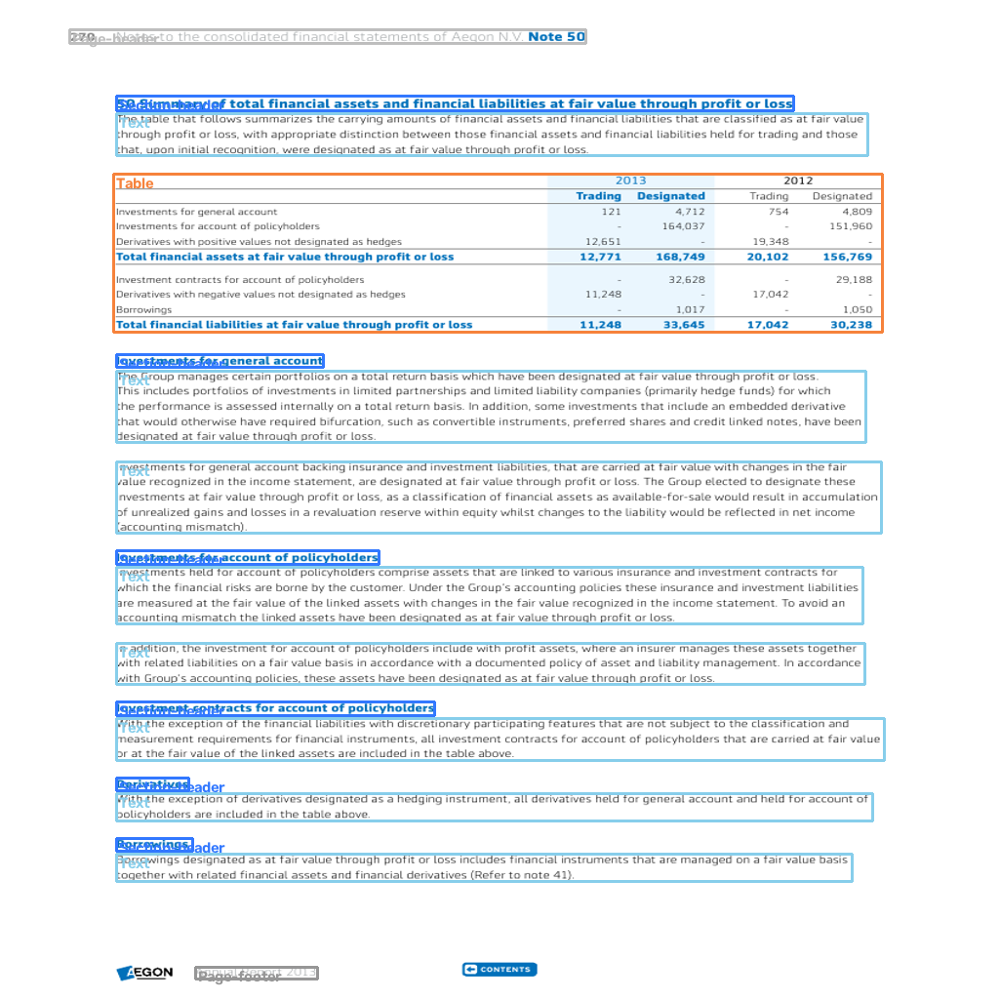
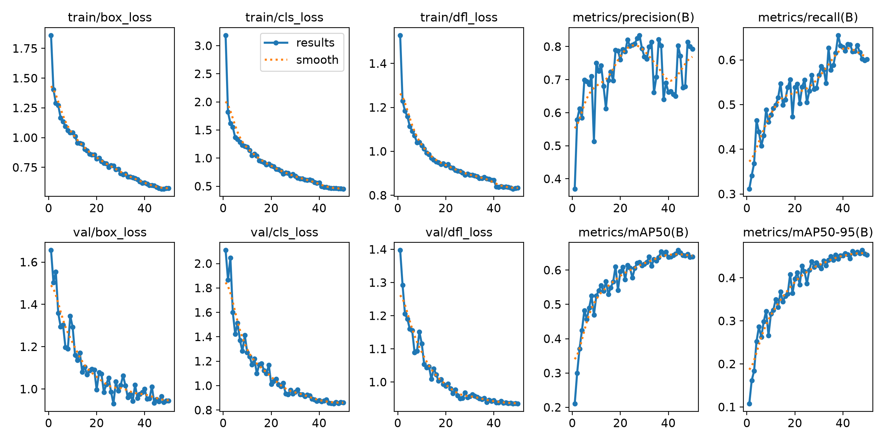
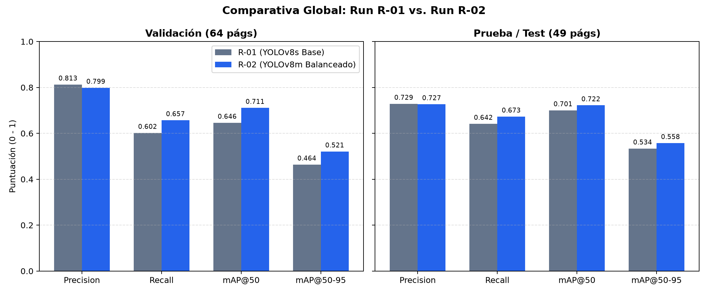
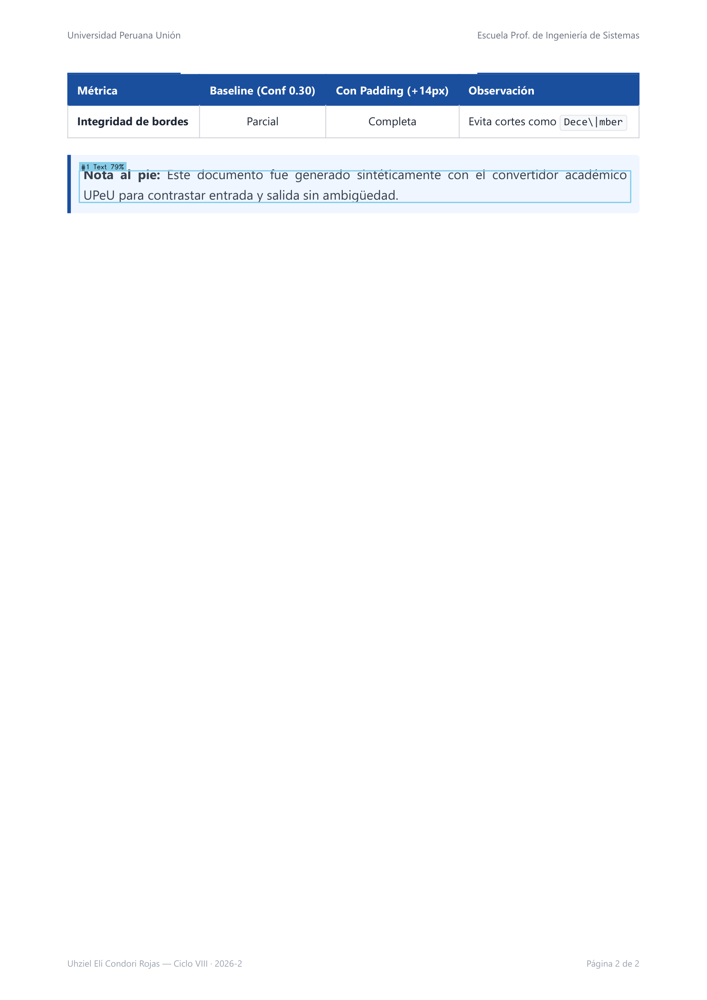
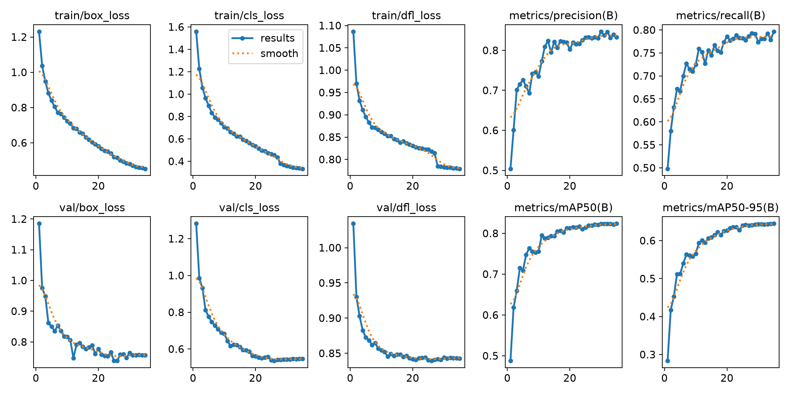
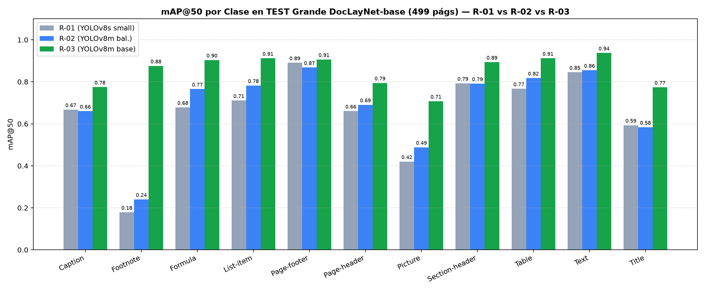
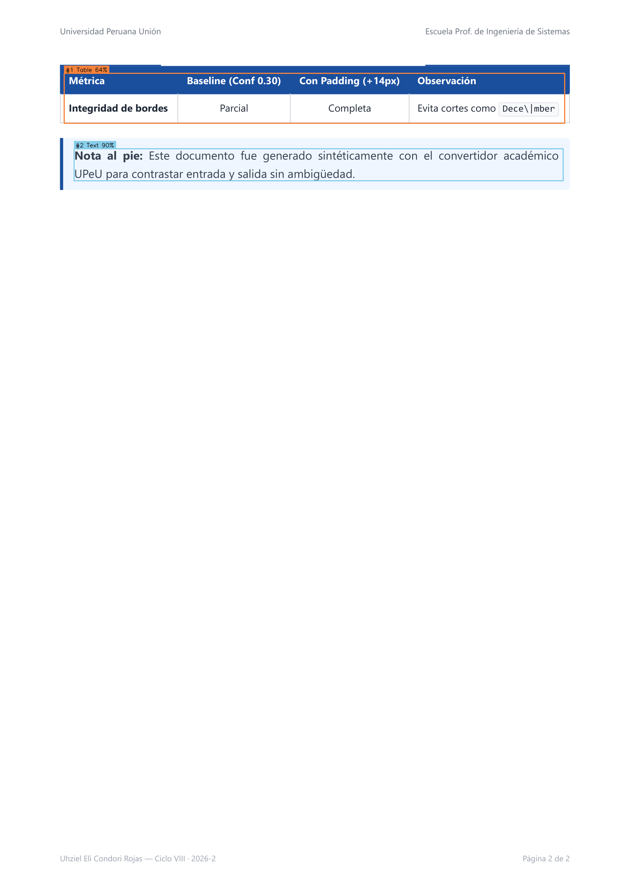
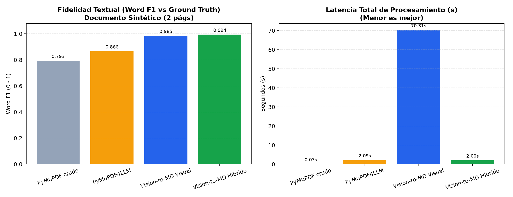
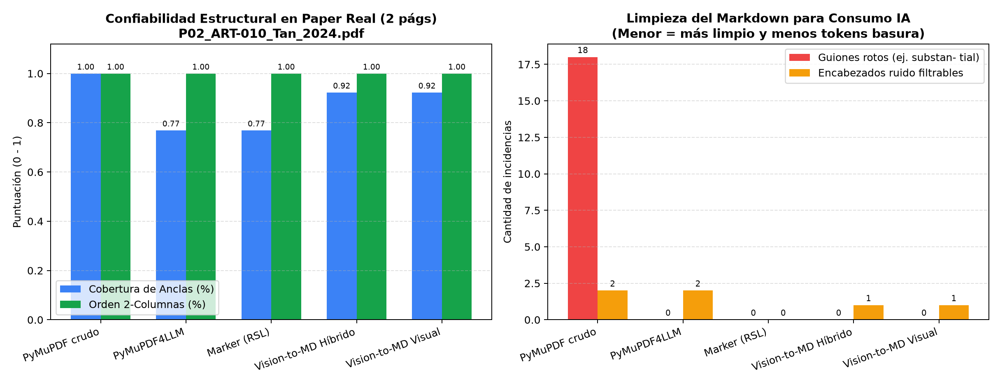

Vision-to-MD: Recorrido Cronológico por los 18 Módulos Python
Desde la adquisición limpia de datos hasta el pipeline híbrido en GPU, ablación controlada (R-01 → R-03) y benchmark local.
Dataset Inicial y Baseline R-01
Descarga reproducible de DocLayNet-small, auditoría sin duplicados y primer entrenamiento YOLOv8s.
01scripts/01_descargar_dataset.py
Descarga directa del archivo comprimido desde Hugging Face Hub y extracción local reproducible.
zip_path = hf_hub_download(
repo_id="pierreguillou/DocLayNet-small",
filename="data/dataset_small.zip",
repo_type="dataset",
local_dir=str(RAW_DIR),
)
with zipfile.ZipFile(zip_path, "r") as zf:
zf.extractall(EXTRACT_DIR)
Qué resuelve y decisión técnica
- Evita fallos de compatibilidad en
datasets 5.1.0(que eliminó scripts heredados) descargando directamente el.zipoficial conhf_hub_download. - Almacena los archivos crudos en
data/_raw/y descomprime de forma ordenada endata/doclaynet_small_raw/.
363.28 MB y extrajo 804 páginas reales (691 train, 64 valid, 49 test) con anotaciones JSON y PNG.scripts/02_preparar_yolo_y_auditar.py
Deduplicación de bloques por id_box, normalización YOLO, EDA de desbalance y auditoría visual.
seen_blocks = {}
for item in data.get("form", []):
cat = item.get("category")
key = item.get("id_box") or tuple(item["box"])
if key not in seen_blocks:
seen_blocks[key] = (cat, item["box"])
for cat, (x, y, bw, bh) in seen_blocks.values():
xc = max(0.0, min(1.0, (x + bw / 2.0) / w_img))
yc = max(0.0, min(1.0, (y + bh / 2.0) / h_img))
wn, hn = bw / w_img, bh / h_img
yolo_lines.append(f"{CLASS_TO_ID[cat]} {xc:.6f} {yc:.6f} {wn:.6f} {hn:.6f}")

Clic para ampliarDecisiones de Ingeniería de Datos
- Deduplicación por
id_box: los JSON repetían la caja padre por cada renglón interno; sin filtrar, YOLO habría entrenado sobre cajas duplicadas. - EDA de desbalance: expuso
Text(4,293) vs.Title(59, 73:1) yFootnote(30, 143:1). - Train / Valid / Test: separados sin mezcla.
data.yaml + muestras visuales verificadas en docs/samples_audit/.scripts/03_entrenar_yolo.py (Run R-01)
Primer Fine-Tuning de YOLOv8s con regularización L2, Early Stopping y Data Augmentation documental.
model = YOLO("yolov8s.pt")
model.train(
data=str(DATA_YAML),
epochs=50, patience=12, # Early Stopping
batch=8, imgsz=1024, device=0, amp=True,
optimizer="AdamW", lr0=0.001, cos_lr=True,
weight_decay=0.0005, # Regularización L2
fliplr=0.0, flipud=0.0, # Sin espejo de texto
translate=0.05, scale=0.25, mosaic=0.3,
plots=True
)

Clic para ampliarQué aplica de IA
- Transfer Learning: parte de pesos COCO en
yolov8s.pt(11.1M parámetros) a1024px. - Control de Overfitting:
AdamW+ L2 (weight_decay=5e-4) + Early Stopping (patience=12) y Augmentation sin volteo horizontal (fliplr=0.0).
mAP@50=0.646 | Test mAP@50=0.701 (P=0.729, R=0.642). Fuerte en texto/tabla, pero ciego en Footnote (0.027) y débil en Title (0.258).Pipeline Modular e Interfaces
Flujo real de datos en producción: Adaptador → Visión YOLO → Orden XY-Cut → Lector Híbrido/OCR → Exportador MD → CLI/UI.
02src/adapters/document_loader.py
Convierte PDFs a matrices BGR de 200 DPI e indexa palabras vectoriales por página.
if ext == ".pdf":
doc = fitz.open(str(path))
mat = fitz.Matrix(dpi / 72.0, dpi / 72.0)
for idx in range(total):
pix = doc.load_page(idx).get_pixmap(matrix=mat, alpha=False)
img_rgb = np.frombuffer(pix.samples, dtype=np.uint8).reshape(pix.height, pix.width, 3)
paginas.append((idx + 1, cv2.cvtColor(img_rgb, cv2.COLOR_RGB2BGR)))
def cargar_palabras_pdf_por_pagina(source_path, dpi=200):
# Extrae (cx_px, cy_px, word) para lectura rápida en modo híbrido
...
Rol en el sistema
- Desacopla el formato de entrada: acepta PDF multipágina, imágenes sueltas (
.png, .jpg, .webp) o carpetas. - Renderiza a
200 DPI(~1650×2340 px en A4) para conservar legibilidad en OCR y tablas pequeñas.
src/vision/layout_detector.py
Inferencia YOLOv8 en GPU intercambiable por pesos (.pt) con supresión de cajas contenidas.
results = self.model.predict(
source=img_bgr, conf=conf, iou=0.55,
agnostic_nms=True, imgsz=self.imgsz, device=self.device
)
def _filtrar_contencion(cls, blocks, thr=0.70):
ordered = sorted(blocks, key=cls._area, reverse=True)
for cand in ordered:
for k in kept:
if (interseccion(cand, k) / area(cand)) >= thr:
contained = True; break
Por qué es crítico
agnostic_nms=Trueelimina duplicados cuando dos clases distintas caen sobre la misma caja (ej.List-itemvsText)._filtrar_contencion(0.70)evita que subcajas atrapadas dentro de unTableo lista se exporten dos veces.
19 → 14 en pág. 1 del paper real y de 13 → 11 en el sintético.src/layout/reading_order.py
Filtrado de ruido editorial y algoritmo XY-Cut por bandas para lectura en doble columna.
filtrados = [b for b in blocks if b.label not in {"Page-header", "Page-footer"}]
ordenados_y = sorted(filtrados, key=lambda b: (b.bbox[1], b.bbox[0]))
for b in ordenados_y:
cruza_centro = (b.bbox[0] < mid_x - margin) and (b.bbox[2] > mid_x + margin)
if cruza_centro:
resultado.extend(_ordenar_zona_columnas(zona_actual, page_width))
zona_actual = []
resultado.append(b)
else:
zona_actual.append(b)
Cómo evita mezclar columnas
- Descarta
Page-headeryPage-footerantes de armar el Markdown (ahorro de tokens basura). - Detecta bloques anchos que cruzan el centro (títulos, resúmenes) como separadores y ordena cada zona intermedia izquierda arriba→abajo y luego derecha.
src/ocr/paddle_reader.py
Wrapper de PaddleOCR 3.7.0 para escaneos e imágenes con solución de compatibilidad oneDNN/PIR.
os.environ.setdefault("FLAGS_use_mkldnn", "0")
os.environ.setdefault("FLAGS_enable_pir_api", "0")
os.environ.setdefault("PADDLE_PDX_DISABLE_MODEL_SOURCE_CHECK", "True")
self._ocr = PaddleOCR(
use_doc_orientation_classify=False,
use_doc_unwarping=False,
use_textline_orientation=False,
enable_mkldnn=False,
lang=self.lang,
)
Hallazgo técnico resuelto
PaddlePaddle 3.3.1lanzabaNotImplementedErrorenoneDNN/PIRal llamar apredict(); se corrigió desactivando MKLDNN y PIR antes del import.- Apaga orientadores de hoja completa porque YOLO ya entrega recortes rectos.
70s–157s en CPU para 2 págs).src/ocr/hybrid_reader.py
Combina las cajas de YOLO con lectura vectorial rápida en PDFs digitales o fallback a PaddleOCR.
seleccionadas = [(cx, cy, w) for (cx, cy, w) in page_words
if x1 - 12 <= cx <= x2 + 12 and y1 - 3 <= cy <= y2 + 3]
if seleccionadas:
seleccionadas.sort(key=lambda item: item[1])
for item in seleccionadas:
if not lineas or (item[1] - lineas[-1][0][1]) > 14.0:
lineas.append([item])
else:
lineas[-1].append(item)
# Orden izq->der por renglón + _HYPHEN_BREAK_RE (substan- tial -> substantial)
Cómo funciona el modo híbrido
- YOLO sigue decidiendo el 100% de cajas y orden; PyMuPDF solo lee las palabras dentro del rectángulo detectado.
- Agrupa por renglón visual (salto
> 14 px) para no desordenar código en línea ni viñetas CSS, y repara guiones de salto de línea. - Si no hay texto interno (escaneo/foto), aplica padding
±14 pxy cae aPaddleReader.
YOLOv8s exacto) y aceleración de 157.25s → 0.39s en paper real.src/exporters/markdown_exporter.py
Recorta figuras/tablas PNG, infiere niveles ##/###/#### y ensambla el Markdown final.
def _inferir_nivel_encabezado(texto: str, base: int = 2) -> int:
m = _SEC_NUM_RE.match(texto) # 1. -> ##, 1.1 -> ###, 1.1.1 -> ####
if not m: return base
return min(6, base + max(0, len([p for p in m.group(1).split(".") if p]) - 1))
if label == "Picture" or (crop_tables_formulas and label in {"Picture", "Table", "Formula"}):
cv2.imwrite(str(img_out_dir / fname), img_bgr[y1:y2, x1:x2])
md_parts.append(f"")
Reglas de ensamblado
- Bloques visuales: guarda recortes PNG de alta calidad en
img/y los enlaza en su posición exacta de lectura. - Semántica Markdown:
Title → #,Footnote → > Nota:,Caption → *cursiva*, y respeta listas numeradas (1. ...) sin duplicar viñetas (- •).
## / ### limpia.convert_cli.py
Orquestador por línea de comandos para automatización por lotes y generación de diagnósticos.
for page_num, img_bgr in paginas:
blocks = detector.detect(img_bgr, conf=conf)
ordered = ordenar_bloques_lectura(blocks, page_width=img_bgr.shape[1])
if save_debug:
vis = LayoutDetector.draw_detections(img_bgr, ordered, numbered=True)
cv2.imwrite(str(doc_out_dir / f"debug_pag_{page_num:02d}.png"), vis)
page_md, crops = exportar_pagina_markdown(..., page_words=words_by_page.get(page_num))
# Flags: --source, --weights, --lang, --conf 0.30, --max-pages, --save-debug, --reader auto|paddle|pymupdf
Para qué sirve en el proyecto
- Une las 5 capas en una sola función reutilizable
procesar_documento()(llamada también por los scripts de benchmark). - Incluye
--save-debugpara inspeccionar cajas, etiquetas y orden exacto#1, #2...antes de generar el texto.
doclaynet_r03_base_yolov8m.pt y modo lector auto.app_ui.py (+ ABRIR_UI.bat)
Aplicación de escritorio en CustomTkinter con selector de modelos YOLO, visor de cajas y editor .md.
def _get_available_weights(self):
pts = sorted([p.name for p in self.weights_dir.glob("*.pt")])
return pts
# En _procesar_thread (hilo secundario para no congelar la UI):
reader_mode = "auto" if self.hybrid_var.get() else "paddle"
blocks = self.detector.detect(img_bgr, conf=conf)
ordered = ordenar_bloques_lectura(blocks, page_width=img_bgr.shape[1])
annotated_list.append(LayoutDetector.draw_detections(img_bgr, ordered, numbered=True))
Funcionalidades clave para demo en vivo
- Multi-modelo en vivo: lista automáticamente los pesos
R-01,R-02yR-03deweights/para comparar al vuelo. - Control interactivo: slider de confianza (15%–75%), checkbox de Modo Híbrido rápido, visor central por páginas y panel derecho para copiar el
.md.
ABRIR_UI.bat dentro del entorno .venv CUDA y procesa documentos en ~0.4–2.0 s.Mejora Controlada: Camino B (R-02)
Oversampling estratificado sobre DocLayNet-small, salto arquitectónico a YOLOv8m y comparación contra R-01.
03scripts/04_preparar_oversampling_r02.py
Balanceo estratificado por manifiesto únicamente en Train sin duplicar archivos ni tocar Valid/Test.
CLASS_REPEAT_WEIGHTS = {
1: 4, # Footnote (30 cajas) -> 4x
10: 4, # Title (59 cajas) -> 4x
2: 3, # Formula (182 cajas) -> 3x
6: 2, # Picture -> 2x
0: 2, # Caption -> 2x
8: 2, # Table -> 2x
}
for _ in range(factor):
manifest_lines.append(img_path.as_posix())
Por qué hacerlo por manifiesto
- Ataca los ratios extremos de
R-01(143:1 enFootnotey 73:1 enTitle) escribiendo rutas repetidas entrain_r02_balanced.txt. - Cero fuga de datos:
valid(64) ytest(49) permanecen intactos para evaluar honestamente.
train subió de 691 a 1,212 entradas/época (Footnote 30→120, Title 59→236, Formula 182→549).scripts/05_entrenar_r02_yolov8m.py (Run R-02)
Aumento de capacidad a YOLOv8m con L2 reforzada, close_mosaic=15, Early Stopping y ajuste RAM.
model = YOLO("yolov8m.pt") # 25.8M páram.
model.train(
data=str(DATA_YAML),
epochs=75, patience=15, # Early Stopping
batch=4, nbs=32, imgsz=1024, # ~4.47 GB VRAM
workers=0, cache=False, amp=True,# Evita OOM RAM Windows
optimizer="AdamW", lr0=0.0008, cos_lr=True,
weight_decay=0.0008, # L2 reforzada
fliplr=0.0, close_mosaic=15
)
Decisiones e incidente resuelto
- Tras fallo
cv::OutOfMemoryErroren época 12 conworkers=2(host con 3.3 GB RAM libre), se cambió aworkers=0reanudando desdelast.pt. - Early Stopping funcionó: detuvo en época 64 tras 15 épocas sin superar el récord de la época 49.
mAP@50 subió 0.646 → 0.711 (Footnote explotó 0.027 → 0.607); Test mAP@50: 0.701 → 0.722.scripts/06_comparar_r01_r02.py
Evaluación comparada R-01 vs. R-02 por clase y descubrimiento del límite por falta de diversidad.
def eval_model(weights_path: Path, tag: str):
model = YOLO(str(weights_path))
for sp in ["val", "test"]:
res = model.val(data=str(DATA_YAML), split=sp, imgsz=1024, device=0, workers=0)
# Guarda P, R, mAP50, mAP50-95 globales y por cada clase
# Diagnóstico visual sobre prueba_sintetica.pdf y P02_ART-010_Tan_2024.pdf
generate_visual_debug_r02()

Clic para ampliar
Clic para ampliarInterpretación ingenieril de resultados
- En el paper real,
R-02eliminó falsos encabezados y extrajo elAbstractcomo texto limpio. - Límite encontrado (Domain Shift): al repetir solo 691 páginas en blanco y negro, perdió sensibilidad ante subtítulos azules UPeU y dejó
Titleen0.251(val).
Escalamiento DocLayNet-base (R-03) y Benchmark
Crecimiento 10x de datos con Zero Data Leakage, modelo campeón YOLOv8m, triple ablación y prueba de confiabilidad.
04scripts/07_preparar_doclaynet_base.py
Descarga de 3.62 GB (8,057 págs), conversión por id_box y filtro anti-fuga contra el benchmark small.
# Recopilar stems de valid+test de DocLayNet-small para proteger Train de base
small_eval_stems = set()
for sp in ["valid", "test"]:
sp_dir = SMALL_YOLO_DIR / sp / "images"
small_eval_stems.update(p.stem for p in sp_dir.glob("*.*"))
convertir_split(raw_root, "train", "train", excluir_stems=small_eval_stems)
convertir_split(raw_root, val_src, "valid", excluir_stems=set())
convertir_split(raw_root, "test", "test", excluir_stems=set())
Rigor experimental aplicado
- Verificó los 113 stems de evaluación de small contra el entrenamiento de base (
0coincidencias filtradas), garantizando comparación 100% imparcial. - Mantuvo deduplicación por
id_box.
6,910 train (91,136 cajas) / 648 valid (incluye 42 Title y 48 Footnote) / 499 test (6,349 cajas).scripts/08_entrenar_r03_base_yolov8m.py (Run R-03)
Ablación pura desde COCO (yolov8m.pt) sobre 6,910 páginas + balanceo 3x en Title/Footnote.
CLASS_REPEAT_WEIGHTS = {1: 3, 10: 3} # Solo Footnote y Title (3x -> 7,780 entradas)
model = YOLO("yolov8m.pt") # Limpio desde COCO (no hereda sesgos de R-02)
model.train(
data=str(R03_YAML), epochs=35, patience=8, # ~243 pasos/época
batch=4, nbs=32, imgsz=1024, workers=0, seed=0, amp=True,
optimizer="AdamW", lr0=0.0008, cos_lr=True, weight_decay=0.0005,
fliplr=0.0, close_mosaic=8
)

Clic para ampliarPor qué 35 épocas y desde COCO
- Con
7,780entradas/época realiza ~243 pasos de gradiente por época (~8,505 pasos reales en 35 ép. = 4.5x más que R-02). - Se reanudó desde
last.pten época 12 hasta completar la época 35 sin overfitting (val/cls_loss=0.547).
P=0.824, R=0.804, mAP@50=0.854 y mAP@50-95=0.686.scripts/09_comparar_r01_r02_r03.py
Triple ablación sobre Small Valid, Small Test y Base Test + diagnósticos visuales R-03.
MODELS = {
"r01": BASE_DIR / "weights" / "doclaynet_small_yolov8s.pt",
"r02": BASE_DIR / "weights" / "doclaynet_r02_yolov8m.pt",
"r03": BASE_DIR / "weights" / "doclaynet_r03_base_yolov8m.pt",
}
for mk, wpath in MODELS.items():
metrics[mk] = {
"small_val": eval_split(wpath, SMALL_YAML, "val"),
"small_test": eval_split(wpath, SMALL_YAML, "test"),
"base_test": eval_split(wpath, BASE_YAML, "test"),
}

Clic para ampliar
Clic para ampliarInterpretación de la triple ablación
Base Test:0.655 (R-01) → 0.686 (R-02) → 0.854 (R-03), subiendo las 11 clases (Footnote0.18→0.88,Title0.59→0.77).Small Test(sin fuga):0.701 → 0.722 → 0.822.
Footnote en el paper real.scripts/10_benchmark_extractores.py
Comparativa 100% local de confiabilidad, orden 2-columnas y latencia frente a alternativas.
def word_f1(pred_md: str, ref_md: str):
common = sum((Counter(words(pred_md)) & Counter(words(ref_md))).values())
# Calcula Word Precision, Recall, F1 y tokens estimados (~chars/4)
def eval_orden_y_calidad_paper(md_text: str):
# Verifica 13 frases ancla ordenadas (pág 1 y pág 2) -> order_acc (pares válidos)
# Cuenta guiones rotos (substan- tial) y fugas de encabezados repetitivos

Clic para ampliar
Clic para ampliarQué demostró frente a alternativas
- Frente a
PyMuPDF crudo: elimina los18guiones rotos y ruido de márgenes. - Frente a
PyMuPDF4LLM: conserva diagramas (PyMuPDF4LLMborró el Mermaid), ahorra 29% tokens y sube de0.866a0.994Word F1. - Frente a
Marker: corre nativo sin Docker Desktop en 0.39 s.
ABRIR_UI.bat con el modelo R-03 y Modo Híbrido activado.